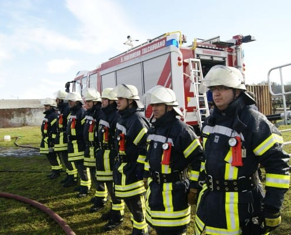

La capacitación de nuestra compañía, es uno de los pilares principales de nuestra organización, para lo cual, la compañía cuenta dentro de su staff a más de diez instructores pertenecientes a la Academia Nacional de Bomberos, los cuales mantienen las exigencias curriculares de nuestros integrantes y cuya implementación del sistema se dividió en cuatro grandes áreas.
Por una parte, está la instrucción básica enfocada a la formación de los cadetes, donde se les enseña conocimientos básicos bomberiles, como así mismo, un constante adoctrinamiento de valores de disciplina y servicio a la comunidad. Una vez ascendido a voluntario, la capacitación es enfocada a técnicas de extinción de incendios y manejo de herramientas.
Posteriormente, se capacita en técnicas de rescate de personas y manejo básico de trauma. Por último, y en forma paralela, se mantiene un currículo optativo de cursos que amplían el conocimiento del voluntario, tales como, investigación de incendio, manejo de materiales peligrosos, etc.
Nuestra Quinta Compañía con el propósito de instruir a sus integrantes para el cumplimiento de las tareas de capacitación de la Academia Nacional de Bomberos de Chile, Sede Octava Región, ha incorporado actualmente a voluntarios dentro de sus actividades con el objetivo de elevar el nivel y el perfeccionamiento de los bomberos voluntarios de Chile en general.